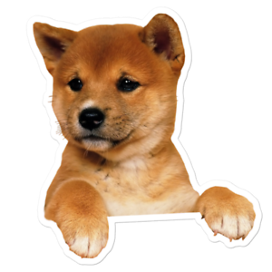
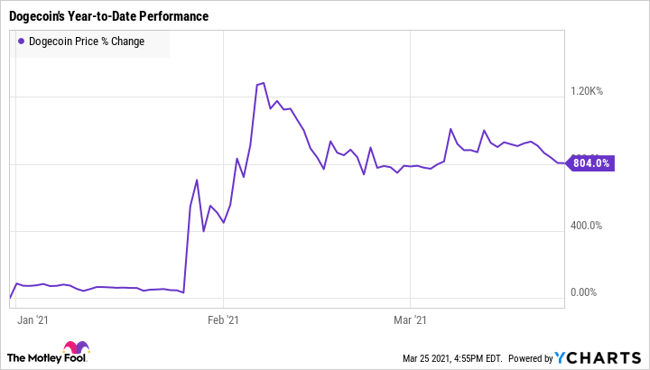

The Shiba Inu breed was originally bred to be a hunting dog. It is small, alert, agile, and has a lot of stamina.
It is a Japanese dog, and it looks like a smaller version of the "Akita Inu," another Japanese dog. It has a fox-like face and has a soft and thick undercoat.
Their tails curl at the end, and when lying down their tails can shield their face and nose to protein them from the cold.
Gallery
This is a Shiba Inu!
They are very fluffy
This is a Shiba Inu!
They are very fluffy
This is a Shiba Inu!
They are very fluffy
This is a Shiba Inu!
They are very fluffy
This is a Shiba Inu!
They are very fluffy
This is a Shiba Inu!
They are very fluffy

This is a Shiba Inu!
They are very fluffy
This is a Shiba Inu!
They are very fluffy
This is a Shiba Inu!
They are very fluffy
Doge meme
Doge was a popular meme in 2013 and has continued to make its mark on the Internet today, with memes coming out related to the original meme, "Doge."
Doge!
The meme was based on a 2010 photograph of a dog, the Shiba Inu, and two-word phrases
such as the most popular phrase; "much wow."
Crypto!!
Dogecoin!
Dogecoin is a cryptocurrency created by software engineers Billy Markus and Jackson Palmer.
Originally made as a joke, the cryptocurrency has now made headlines for its popularity rise in
2020 and has continued to shoot up in price and value in 2021.

SHIB!
Shiba Inu, also known as SHIB, or Shiba Token, is a cryptocurrency created in August 2020
by a person known by his alter ego "Ryoshi." It is also based on the dog, Shiba Inu, and is a
competitor to the meme coin "Dogecoin." It has shot up in price in October of 2021 by 300% and seems
to be going stable as of this written website (10/14/2021).
So cute
At the end of the day, the Shiba Inu is just a very cute and loved dog around the world,
and many things have sprouted off of its popularity. It almost went extinct in the 1940s however
it now thrives once again.